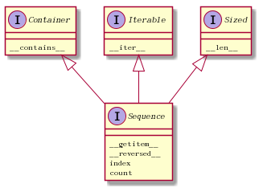
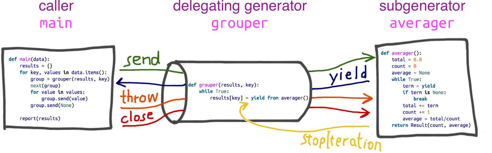

Python Cookbook
Table of Contents
- 1. Data Structures and Algorithms
- 1.1. Unpacking from Iterables
- 1.2. Keeping the Last N Items
- 1.3. Finding the Largest N Items
- 1.4. PriorityQueue Implemention
- 1.5. defaultdict
- 1.6. OrderedDict
- 1.7. sortedcontainers
- 1.8. Calculating with Dictionaries
- 1.9. keys-view
- 1.10. Naming a Slice
- 1.11. Counting
- 1.12. Sorting a List of Dictionaries
- 1.13. Sorting Objects Without Native Comparison
- 1.14. groupby
- 1.15. compress
- 1.16. namedtuple&namedlist
- 1.17. sum, min,…
- 1.18. ChainMap
- 2. Network&Web
- 3. Interface
- 4. asyncio
1 Data Structures and Algorithms
1.1 Unpacking from Iterables
x, *middle, y = [1, 2, 3, 4, 5] # middle can be replaced by placeholder '_' # x => 1 # y => 5 data = ['ACME', 50, 91.1, (2012, 12, 21)] name, shares, price, (year, mon, day) = data
1.2 Keeping the Last N Items
from collections import deque d=deque(maxlen=N)
1.3 Finding the Largest N Items
import heapq heapq.nlargest(N, items) heapq.nsmallest(N, items) # heapq.nlargest(N, data, key=lambda function)
Underneath the covers, they work by first converting the data into a list where items are ordered as a heap.
nums = [1, 8, 2, 23, 7, -4, 18, 23, 42, 37, 2] heapq.heapify(nums) # inplace function # nums => [-4, 2, 1, 23, 7, 2, 18, 23, 42, 37, 8] heap[0] is the smallest
1.4 PriorityQueue Implemention
import heapq class PriorityQueue: def __init__(self): self._queue = [] self._index = 0 # use index to properly order items with the same priority level def push(self, item, priority): heapq.heappush(self._queue, (-priority, self._index, item)) self._index += 1 def pop(self): return heapq.heappop(self._queue)[-1]
1.5 defaultdict
from collections import defaultdict d = defaultdict(list) d['a'] #=> []
defaultdict will automatically create dictionary entries for keys accessed later on, alternative:
d.setdefault('a', []).append(1)
1.5.1 alternative
d = {} # A regular dictionary d.setdefault('a', []).append(1)
1.6 OrderedDict
An OrderedDict internally maintains a doubly linked list that orders the keys according to insertion order.
1.7 sortedcontainers
SortedList, SortedDict, SortedSet
1.8 Calculating with Dictionaries
prices = { 'ACME': 45.23, 'AAPL': 612.78, 'IBM': 205.55, 'HPQ': 37.20, 'FB': 10.75 } min_price = min(zip(prices.values(), prices.keys())) # zip to ((value, key)) generator min(prices, key=lambda k: prices[k]) # Returns 'FB' min_value = prices[min(prices, key=lambda k: prices[k])]
1.9 keys-view
a.keys() & b.keys() a.keys() - {'z', 'w'} # {'z', 'w'} is a set
1.10 Naming a Slice
a = [1,2,3,4,5] b = slice(1,2) a[b] #=> [2] slower than a[1]
1.11 Counting
from collections import Counter word_counts1 = Counter(words1) word_counts2 = Counter(words2) word_counts1 + word_counts2
1.12 Sorting a List of Dictionaries
from operator import itemgetter rows_by_fname = sorted(rows, key=itemgetter('fname')) rows_by_lfname = sorted(rows, key=itemgetter('lname','fname')) g = itemgetter(2, 5, 3) # the call g(r) returns (r[2], r[5], r[3])
1.13 Sorting Objects Without Native Comparison
sorted(users, key=lambda u: u.user_id) from operator import attrgetter sorted(users, key=attrgetter('user_id')) by_name = sorted(users, key=attrgetter('last_name', 'first_name'))
1.14 groupby
Since groupby() only examines consecutive items, should sort the groupby key first.
rows.sort(key=itemgetter('date')) for date, items in groupby(rows, key=itemgetter('date')): pass # alternative if memory is no concern, and faster than sort+groupby rows_by_date = defaultdict(list) for row in rows: rows_by_date[row['date']].append(row)
1.15 compress
Takes an iterable and an accompanying Boolean selector sequence as input.
list(compress(data, mask))
1.16 namedtuple&namedlist
optional or missing fields
Stock = namedtuple('Stock', ['name', 'shares', 'price', 'date', 'time']) stock_prototype = Stock('', 0, 0.0, None, None) def dict_to_stock(s): return stock_prototype._replace(**s)
1.17 sum, min,…
s = sum((x * x for x in nums)) s = sum(x * x for x in nums) # same as above # Original: Returns 20 min_shares = min(s['shares'] for s in portfolio) # Alternative: Returns {'name': 'AOL', 'shares': 20} min_shares = min(portfolio, key=lambda s: s['shares'])
1.18 ChainMap
A ChainMap takes multiple mappings and makes them logically appear as one. If there are duplicate keys, the values from the first mapping get used.
from collections import ChainMap c = ChainMap(a,b) # alternative c = b c.update(a)
- but ChainMap keep the reference of a&b
1.18.1 store scoped values
A ChainMap is particularly useful when working with scoped values such as variables in a programming language (i.e., globals, locals, etc.)
values = ChainMap() values['x'] = 1 values = values.new_child() values['x'] = 2 values['x'] #=> 2 values = values.parents values['x'] #=> 1
2 Network&Web
2.1 RESTful API Query
from urllib import request, parse url = 'http://www.123.com/get' params = { 'name1' : 'value1', 'name2' : 'value2' } query_string = parse.urlencode(params) # headers headers = { 'User-agent' : 'none/ofyourbusiness', 'Spam' : 'Eggs' } u = request.urlopen(url+'?' + query_string.encode('ascii'), headers=headers) resp = u.read() # resp.text(unicode), resp.content(raw binary), resp.json
- useful resp data
resp.status_coderesp.headers['last-modified']resp.headers['content-type']resp.headers['content-length']
- urlopen useful args
- headers
- cookies
- files
- auth
2.1.1 Testing
- use httpbin
3 Interface
3.1 Properties
class Prop: def __init__(self, x): self.__x = x @property def x(self): return self.__x @x.setter def x(self, value): self.__x = value
3.2 Sequences

3.3 Monkey Patching
Changing a class or module at runtime, without touching the source code.
some_obj.__getitem__ = some_get_function(some_class, position)
4 asyncio
4.1 coroutine
def simple_coroutine(): print('-> coroutine started') x = yield # received by send(x) print('-> coroutine received:', x) coro = simple_coroutine() # GEN_CREATED next(coro) # equivalent to coro.send(None). GEN_CREATED->GEN_RUNNING->GEN_SUSPENDED #-> coroutine started coro.send(42) # GEN_SUSPENDED->GEN_RUNNING->GEN_CLOSED #-> coroutine received: 42
- next(coro) is often describe as "priming" the coroutine(advancing it to the first yield)
4.1.1 states
use inspect.getgeneratorstate() to get state
- GEN_CREATED: Waiting to start execution
- GEN_RUNNING: Currently being executed by the interpreter
- GEN_SUSPENDED: Currently suspended at a yield expression
- GEN_CLOSED
4.1.2 generator methods
- send(value): the caller can post data that then becomes the value of the yield expression inside the generator.
- throw(): allow the caller to throw an exception to be handled inside the generator.
- close()
4.1.3 auto priming
from functools import wraps def coroutine(func): """Decorator: primes `func` by advancing to first `yield`""" @wraps(func) def primer(*args,**kwargs): gen = func(*args,**kwargs) next(gen) return gen return primer @coroutine def simple_coroutine(): x = yield coro = simple_coroutine() #-> GEN_SUSPENDED
yield fromautomatically primes the coroutine called by it, making it incompatible with the coroutine decorator above.asyncio.coroutineis designed to work with yield from so it does not prime the coroutine.
4.1.4 Termination & Exception
- from generator
An exception within a coroutine propagates to the caller of the next or send that triggered it.
- to generator
throw: Causes the yield expression where the generator was paused to raise the exception given.close: Causes the yield expression where the generator was paused to raise a Generator Exit exception.
- cleanup code
wrap the cleanup code in
try/finallyblock
4.1.5 return value
Result = namedtuple('Result', 'count average') def averager(): total = 0.0 count = 0 average = None while True: term = yield # yield None if term is None: break # use a sentinel to terminate the coroutine normally total += term count += 1 average = total/count return Result(count, average) coro_avg = averager() coro_avg.send(10) try: coro_avg.send(None) except StopIteration as exc: result = exc.value # Result(count=3, average=15.5)
- in order to return a value, a coroutine must terminate normally
4.1.6 yield from
The main feature of yield from is to open a bidirectional channel from the outermost caller to the innermost subgenerator, so that values can be sent and yielded back and forth directly from them, and exceptions can be thrown all the way in without adding a lot of exception handling boilerplate code in the intermediate coroutines.
- similar constructs in other languages are called await
def gen(): yield from 'abc' # shortcut for forloop # for x in 'abc': # yield x
- terms
- delegating generator: The generator function that contains the yield from <iterable> expression
- subgenerator
- caller

Figure 2: Coroutine
- meaning of yield from
- Any values that the subgenerator yields are passed directly to the caller of the delegating generator
- Any values sent to the delegating generator using send() are passed directly to the subgenerator.
If the sent value is None, the subgenerator's __next__() method is called. If the sent value is not None, the subgenerator's send() method is called. If the call raises StopIteration, the delegating generator is resumed. Any other exception is propagated to the delegating generator.
- return expr in a generator (or subgenerator) causes StopIteration(expr) to be raised upon exit from
the generator.
- The value of the yield from expression is the first argument to the StopIteration exception raised by
the subgenerator when it terminates.
- pseudocode
_i = iter(EXPR) try: _y = next(_i) except StopIteration as _e: _r = _e.value # the RESULT in the simplest case else: # channel between the caller and the subgenerator while 1: _s = yield _y try: _y = _i.send(_s) except StopIteration as _e: _r = _e.value break RESULT = _r
- _i(iterator): The subgenerator
- _y(yielded): A value yielded from the subgenerator
- _r(result): The eventual result
- _s(sent): A value sent by the caller to the delegating generator, which is forwarded to the subgenerator
- _e(exception): An exception
- ipython-yf
Enables evaluating yield from directly in the iPython console.